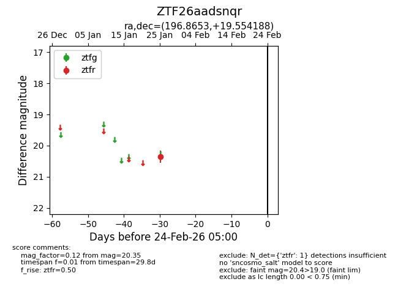
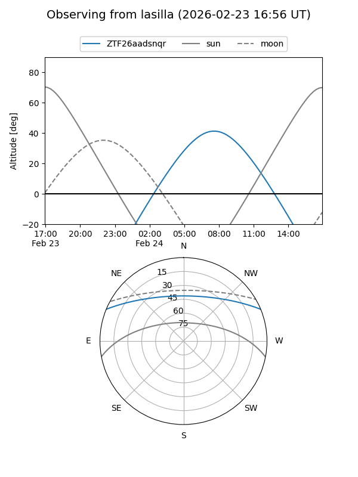
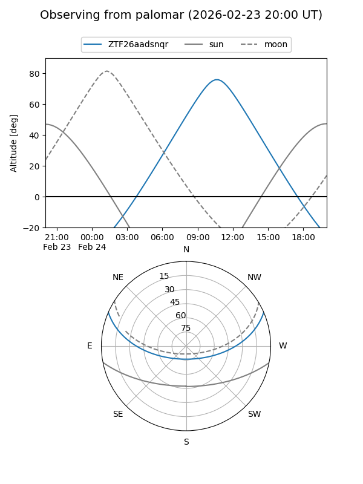

ZTF26aadsnqr
Target ZTF26aadsnqr at 2026-01-25 10:56
Aliases and brokers:
FINK: link
Lasair: link
ALeRCE: link
alt names
ZTF26aadsnqr (ztf,fink_ztf)
Coordinates:
equatorial (ra, dec) = 196.8653,+19.55419
equatorial (HMS+DMS) = 13:07:27.67,+19:33:15.08
galactic (l, b) = (329.6543,+81.58203)
Flags:
Photometry:
last ztfr=20.35
1 ztfr detections
Lightcurve

Visibility


Additional plots